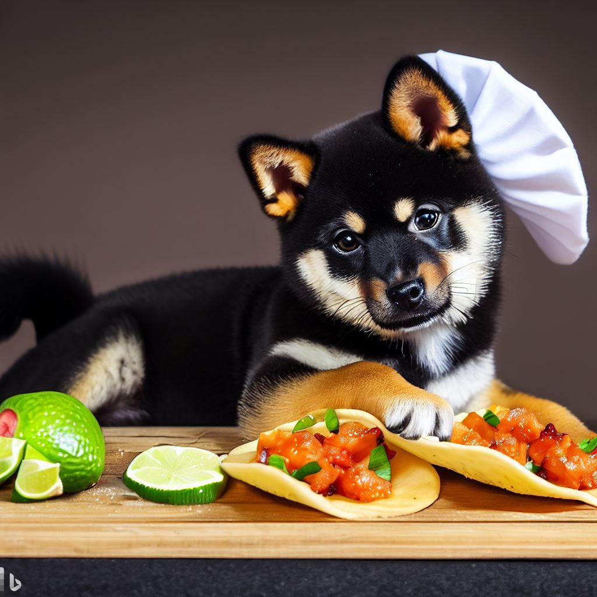

Fish Tacos

Description
These crispy baja-style fish tacos with shredded cabbage and a spicy homemade white sauce are just delicious! Serve with homemade pico de gallo and lime wedges to squeeze on top to make a truly, pawfect meal for the whole litter!
- 6 medium tomatoes, diced
- 1 small onion, diced
- 1/2 cup chopped fresh cilantro
- 2 tablespoons canned diced jalapeno peppers, or more to taste (juice reserved)
- 1/2 teaspoon garlic salt
- 1/2 medium lime, juiced
- 3 cups coleslaw mix
- 3 tablespoons ranch dressing
- 2 cups vegetable oil for frying
- 1 (12 fluid ounce) can or bottle Mexican beer
- 1 (9 ounce) box batter mix (such as Shore Lunch®)
- 1 pound cod fillets, cut into 2-inch chunks
- 24 (6 inch) corn tortillas
- 2 cups shredded Mexican cheese blend
- 12 lime wedges
- 1 teaspoon Sriracha sauce, or to taste (Optional)
- Make the salsa: Mix tomatoes, onion, cilantro, jalapeños, 1 tablespoon jalapeño juice, and garlic salt together in a bowl until well combined. Pour lime juice over top. Cover with plastic wrap and refrigerate until needed.
- Make the tacos: Toss coleslaw mix and ranch dressing together in a bowl; set aside until needed.
- Heat oil in a deep-fryer or large saucepan to 350 degrees F (175 degrees C).
- Stir beer and batter mix together in a bowl. Dip cod into batter mix.
- Fry cod in batches in the hot oil until cooked through and coating is golden brown, 4 to 5 minutes. Transfer cod with a slotted spoon to a paper towel-lined plate.
- Wrap corn tortillas in wet paper towels. Microwave on high until warm, about 1 minute.
- For each serving, stack two tortillas on a plate; top with cod, Mexican cheese, coleslaw mixture, and salsa. Squeeze a lime wedge over top and drizzle with Sriracha.
- Chow down!